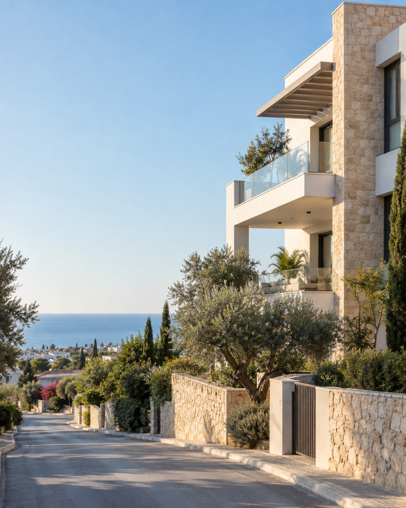

Южный Кипр: недвижимость для жизни, инвестиций и резидентского маршрута
по времени Дубая (UTC+4)
5 новостроекVAT и платежиСценарий арендыПамятка по ПМЖ
О вебинаре
Как выбрать город и объект, не смешивая жизнь, доход и статус
Сравним Лимассол, Пафос и Ларнаку, покажем, как читать цену с VAT, график оплаты и арендный сценарий — и когда покупку стоит проверять на соответствие ускоренной процедуре Immigration Permit.
После регистрации пришлём персональную подборку новостроек с цифрами и отдельной пометкой по резидентскому сценарию.
Жизнь на Кипре
Море рядом, город в доступе, дом для обычной жизни
Показываем не открытку на неделю, а среду второго дома или переезда: жилые улицы, виды, набережные и вечерний ритм побережья.

Дом у моряСовременная архитектура, приватность и спокойная жилая улица.Побережье после закатаСценарий второго дома, жизни у моря и городской инфраструктуры.
Программа
Что разберём на вебинаре
01
Лимассол, Пафос или Ларнака
Ритм жизни, инфраструктура, бюджет входа и спрос на аренду в разных городах.
02
Как читать цену
Стоимость объекта, VAT, платежи по этапам и расходы до получения ключей.
03
Инвестиционный сценарий
Долгосрочная и курортная аренда, управление, сезонность и риск простоя.
04
Immigration Permit
Для кого доступна процедура Reg. 6(2), какие категории инвестиций рассматриваются и что нужно проверять заранее.
05
Подборка новостроек
Как сократить каталог до 3–5 объектов, которые соответствуют вашему плану.
После регистрации
Что войдёт в вашу подборку
01
5 новых проектов
Под вашу цель, бюджет, город и желаемый срок готовности.
02
Полная цена входа
Стоимость, VAT, платежи и обязательные расходы.
03
Сценарий аренды
Допущения по спросу, управлению и возможному простою.
04
Проверка маршрута
Кому подходит Reg. 6(2) и какие данные нужны для первичного скрининга.
Постоянное проживание на Кипре
Ускоренная процедура для инвесторов — после проверки всех критериев
От €300 000 + VATдля первой продажи дома или квартиры от девелопера
Доход от €50 000 в годбазовый ориентир для заявителя; требования к семье увеличивают сумму
Процедура предназначена для граждан третьих стран и требует не только инвестиции: подтверждаются происхождение средств, обеспеченный доход, качество документов и другие критерии. Покупка сама по себе не гарантирует разрешение.